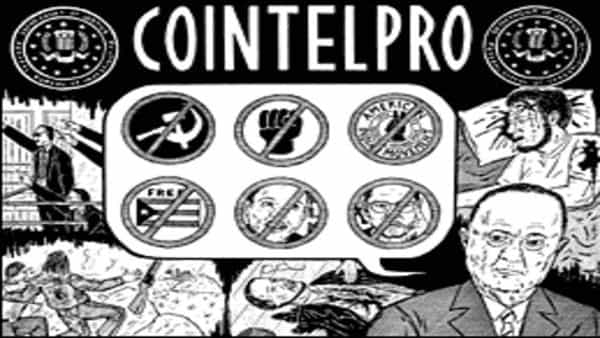

Daryush "Roosh" Valizadeh created ROK in October 2012. You can visit his blog at RooshV.com or follow him on Twitter and Facebook.


A handful of government employees have told me that I’m almost certainly on a FBI “watchlist.” While I have no conclusive evidence to prove that, a look into the FBI’s history concerning COINTELPRO suggests that we should assume a minimal level of surveillance is occurring.

COINTELPRO, short for Counter Intelligence Program, was an FBI program to surveil, infiltrate, and actively subvert organizations that could threaten government policy or power. They have targeted anti-war protesters, Civil Rights groups, and environmentalists by placing agents within theirs ranks to feed back information to the FBI or actively work to entrap its members into committing illegal acts. Often times, FBI actions led directly to beatings and assassinations.
The COINTELPRO program was exposed in the 1970’s and said to have been dissolved, but its methods clearly continue today, as shown by recent publicized examples of FBI subversion.
The first case involves a human rights organization founded by a priest who aimed to close the U.S. Army School Of The Americas, a military camp for “revolutionaries” whose goal was to train soldiers to overthrow Latin American governments the USA didn’t like. They were infiltrated by the FBI and surveilled for over a decade.
Despite no incidents of violence over the multi-year period of the gatherings, the FBI justified its activities by claiming that other groups, such as anarchists, could join SOA Watch events and cause problems.
[…]
Every year they acknowledge that it’s peaceful and just about every year they have some type of alarmist warning that ‘While it’s peaceful, you never know when something will turn unpeaceful.
Recently in Texas, the FBI infiltrated a group protesting the construction of a pipeline based on environmental grounds. No illegal acts were committed by the group to warrant FBI attention.
Between November 2012 and June 2014, the documents show, the FBI collated inside knowledge about forthcoming protests, documented the identities of individuals photographing oil-related infrastructure, scrutinised police intelligence and cultivated at least one informant.
Also in Texas, a left-wing group was infiltrated by an FBI informant who insisted that the group become violent in response to the Republican scourge. Once he convinced members to make Molotov cocktails, the FBI stormed in and made arrests.
The film makes a compelling case that [FBI asset] Darby, with the FBI’s blessing, used his charisma and street credibility to goad Crowder and McKay into pursuing the sort of actions that would later land them in prison.
Lastly, the FBI infiltrated middle-aged peace activists and filed trumped-up charges of them providing “assistance” to terrorists. The bogus charges were eventually dropped.
The FBI first became interested in Tom and his fellow travelers on the eve of the 2008 Republican National Convention in Saint Paul, Minnesota, when the bureau that purports to keep America safe sent an undercover agent who went by the name “Karen Sullivan” to infiltrate the Twin Cities Anti-War Committee, one of the most prominent groups organizing protests outside the convention.
“I remember a woman who was really eager,” Tom told me. “She kept bringing up how eager she was about revolution. And you know, on the one hand, people think it’s good because we really need to change society, so it’s a fine thing to talk about. On the other hand, she was trying to find people she could manipulate into [committing] a crime.”
The FBI is also known for recruiting mentally unstable individuals to commit terror acts, helping them develop illegal plots, and then arresting them at the last minute. Afterwards, the agency can brag that they “stopped terrorism” through their “sting” operations when it was they themselves who acted as a terrorist organization by creating the plan and assisting the terrorists to completing it.
Nearly all of the highest-profile domestic terrorism plots in the United States since 9/11 featured the “direct involvement” of government agents or informants, a new report says.
Some of the controversial “sting” operations “were proposed or led by informants”, bordering on entrapment by law enforcement. Yet the courtroom obstacles to proving entrapment are significant, one of the reasons the stings persist.
I would not be surprised to one day learn that the FBI allowed terrorist patsies to complete their FBI-inspired plans in order to create a crisis which allows for the government to pass unfavorable policy. For example, imagine if the FBI allowed a patsy to proceed with a plan right before a Presidential election, with the goal to aid the incumbent party in power.
While I have no hard evidence to show that the FBI or other alphabet agency is watching us, it’s hard to believe that our activities have not at least been brought up on agent desks. Here’s what we know about FBI activities in only the past 15 years:
There is nothing to indicate that the FBI has stopped the above activities, and if anything, they have likely increased them against right-wing patriot groups. I do believe that if the February 2016 cancelled meetups took place, many of them would have been attended by FBI agents to at least gather information on our group. The fact that we don’t advocate for illegal activity does not mean the FBI won’t spend considerable manpower to surveil us, especially when you consider that subverted groups in the above cases received much less media exposure than us.
Indymedia has done the task of analyzing past FBI infiltrations to create a behavioral profile of a typical agent or asset. It’s important to state that local police departments can also act as infiltrators by pretending that they are some of sort of elite FBI squad.
1. Agents may have a big bankroll to provide immediate value to the group. Sort of like the “big baller troll” that pops up on the forum, agents use money or fantastical backstories to impress targets, who also don’t mind the fact that the agent picks up the tab most of the time.
2. They encourage violent and illegal actions. This is the biggest tell that you’re dealing with an agent. Victory for the FBI is for members of the target group to agree to an illegal crime. You’ll be busted right before you intend to carry it out.
3. Their past is a mystery. Agents can’t properly explain details of their childhood, university years, or past employment. They get agitated when you ask basic question about their past.
4. They have fake lodgings. The apartment they show you is a shell rental that may not even have towels or soap. They also don’t have family photos or nostalgic mementos.
5. They’re nosy about criminal activities you’ve done in the past. They want you to admit to illegal deeds on tape.
6. They steer group members into tackling unrelated missions. Agents try to sabotage the group by distracting them with weird projects and goals.
7. They are insistent about “fighting the man.” They’ll keep saying that we need to “fight back” and “stick it to them.” They’ve very heavy on promoting revolutionary-inspired actions.
8. They will shame you as weak for not doing what they want. If you decide that an agent’s idea to plant a bomb somewhere is crazy, he’ll say you are not man enough to “do what it takes.”
9. They inject a lot of drama into the group. They amplify existing interpersonal problems between members in an effort to weaken the group.
10. They have inconsistent or underdeveloped beliefs. To gain access to your group, they crammed what was available online. They will parrot community beliefs without understanding the meaning or intent behind them.
The agent won’t give up after the group fails to perform the illegal action he suggested. He’ll keep persisting until he satisfies his FBI bosses and criminal charges can be brought up. You will have to deliberately exclude the agent from your group. This may involve having to expose him publicly or file a restraining order against him.
The information above will help safeguard you from human intelligence (HUMINT) gathering by the FBI and other law enforcement agencies, but it does not protect against agent hacking or electronic spying. For that you will need operational security (OPSEC), which is a more technical game. A good first step is to secure communications with other group members.
While we can’t completely prevent infiltration of agents without an expensive counter-intelligence apparatus of our own, we can eject those from our community who display infiltrator behavioral traits. If you meet someone through one of my web sites who displays a couple of them, especially with talk about getting violent, it’s a near certainty that that person is an agent who is trying to entrap you.
I hope that we aren’t targeted by the FBI through one of their COINTELPRO methods, but at the minimum, our existence has been discussed in government agencies. Their infiltration still wouldn’t change the fact that our ideas have merit and are part of an anti-establishment wave that is only growing in influence.
Read More: How To Wage Economic Warfare